Stamppot is a hearty and comforting Dutch classic, blending mashed potatoes with seasonal vegetables like kale, carrots, or sauerkraut
into a warm, flavorful medley. Often served with smoked sausage or rich gravy, it embodies the cozy, rustic charm of the Netherlands’
culinary traditions. Each bite tells a story of simple ingredients transformed with care into a nourishing meal, perfect for chilly
days and a true taste of Dutch home cooking.
Bitterballen
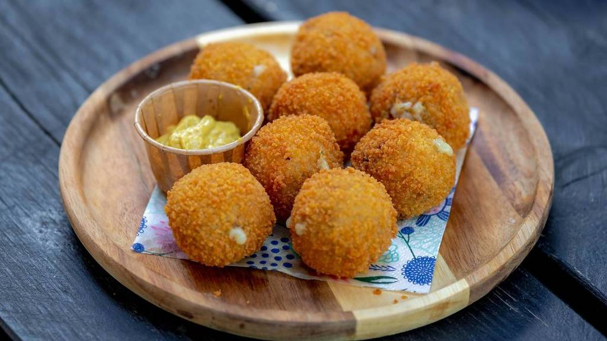
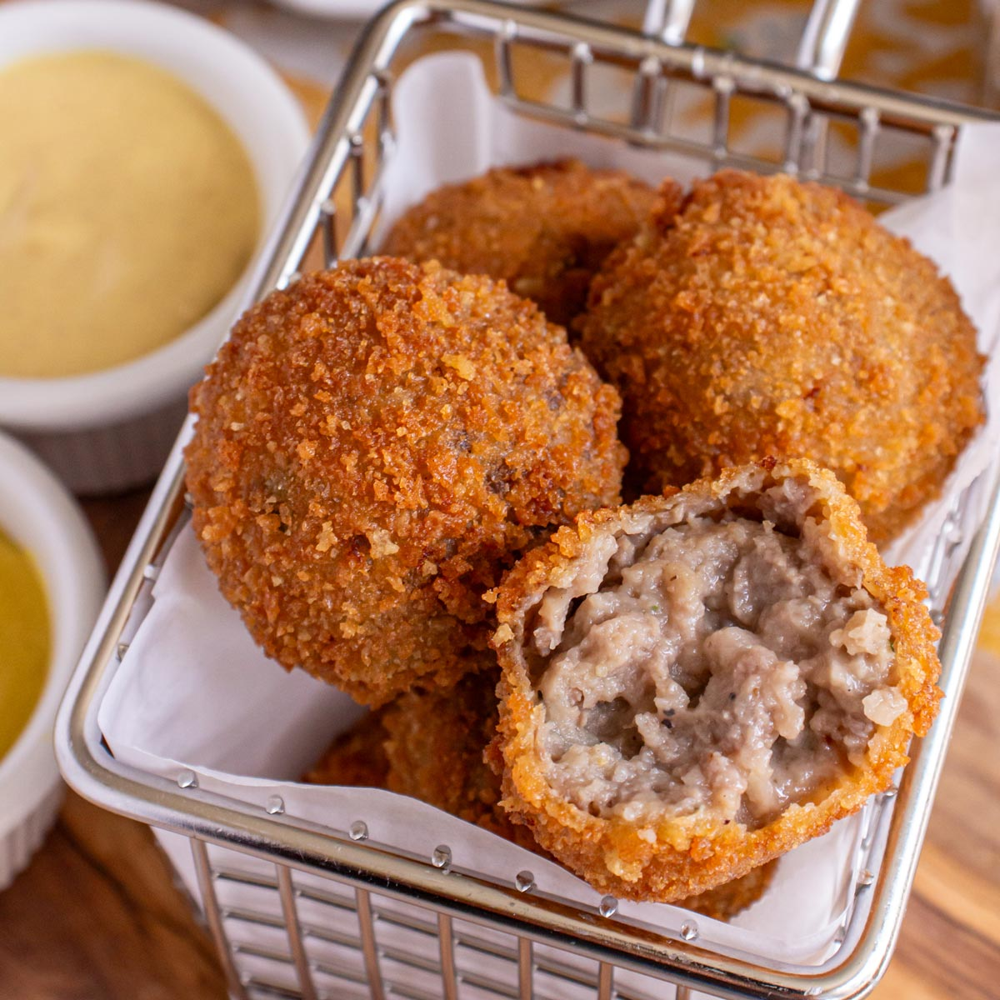
Bitterballen are a beloved Dutch snack that perfectly blend comfort and tradition. These deep-fried, crispy-coated balls are filled
with a rich, savory ragout, usually made from beef or veal, and are often enjoyed with a dollop of mustard. Popular in cafés and bars
across the Netherlands, Bitterballen offer a taste of Dutch conviviality — perfect for sharing, snacking, and savoring the warmth of
local culture in every bite.
Haring ‘Hollandse Nieuwe’
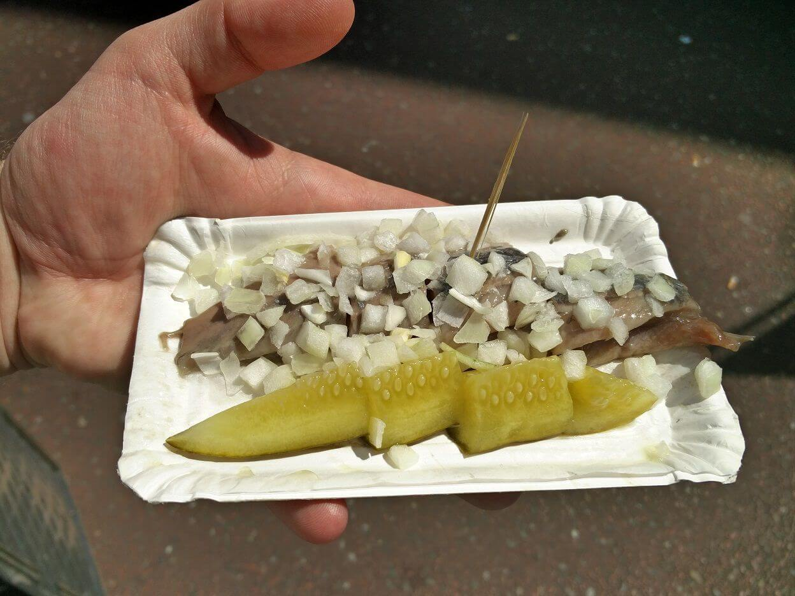
Haring ‘Hollandse Nieuwe’ is a true Dutch delicacy, celebrated for its fresh, tender raw herring caught at the peak of season.
Traditionally served with finely chopped onions and pickles, and eaten by holding it by the tail, it’s a playful and iconic culinary
experience. Each bite is a taste of the Netherlands’ coastal heritage, offering a connection to the sea, the bustling harbors, and the
timeless Dutch way of life.
Stroopwafel
Stroopwafels are a sweet Dutch delight that capture the heart of the Netherlands in every bite. Two thin, crisp waffle layers embrace
a warm, caramel-like syrup, creating a perfect balance of crunch and gooey sweetness. Often enjoyed with coffee or tea, placed atop a
hot cup to soften the syrup, stroopwafels are more than a treat — they are a cozy taste of Dutch tradition and everyday magic.
Poffertjes
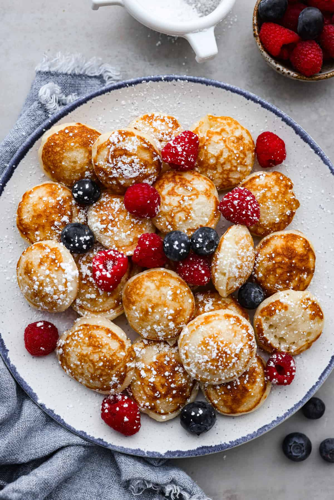
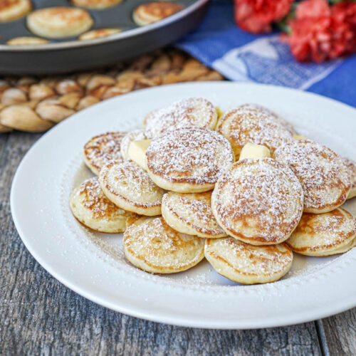
Poffertjes are tiny, fluffy Dutch pancakes that bring a touch of whimsy to any table. Light and airy, they’re traditionally dusted
with powdered sugar and served with a pat of melting butter, creating a perfect bite every time. Popular at street markets and festive
fairs, poffertjes capture the playful, cozy spirit of Dutch cuisine and make every moment feel a little sweeter.
Appeltaart
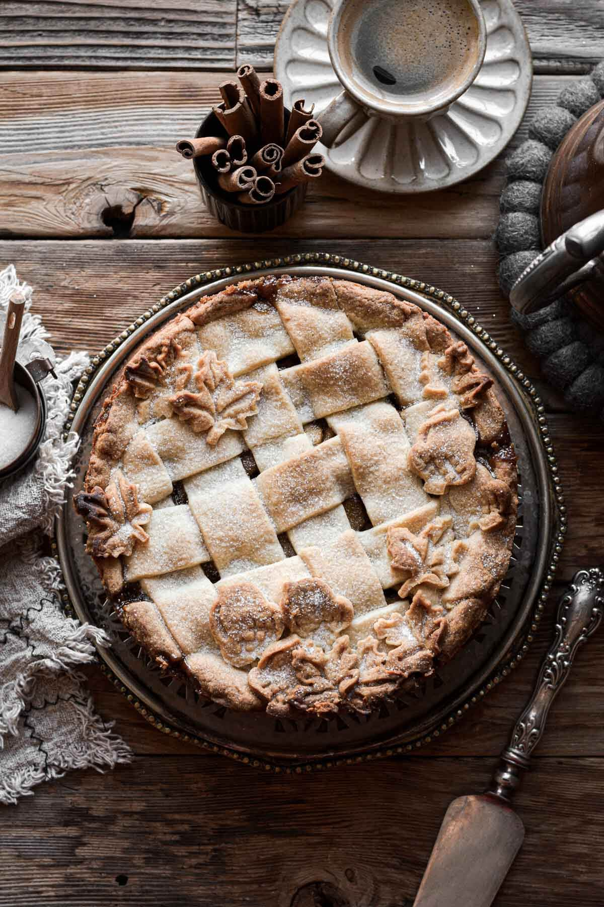
Appeltaart is the quintessential Dutch apple pie, warm and comforting with a tender, buttery crust and a fragrant filling of
cinnamon-spiced apples. Often enjoyed with a dollop of whipped cream, it’s a beloved treat in Dutch cafés and homes alike. Each slice
tells a story of tradition, family gatherings, and the simple joys of the Netherlands’ culinary heritage, inviting visitors to savor
a taste of authentic Dutch coziness.
 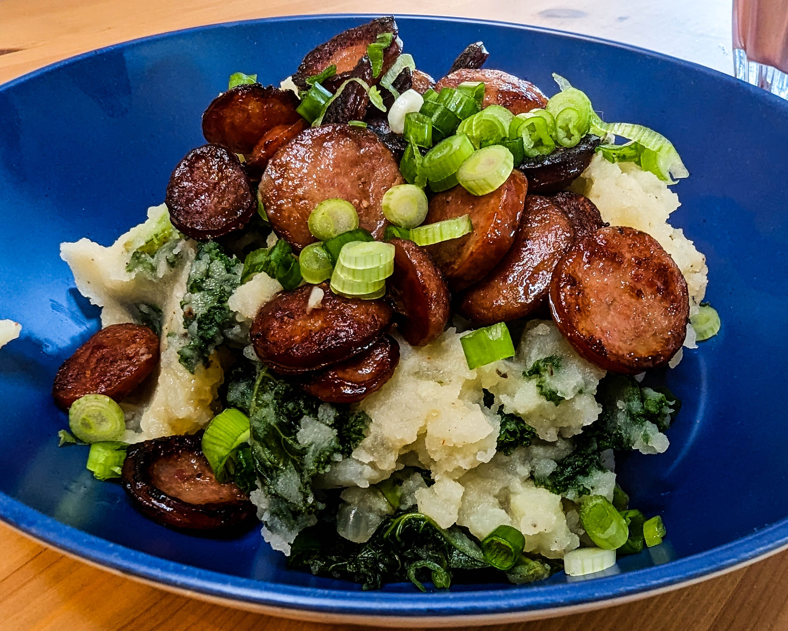
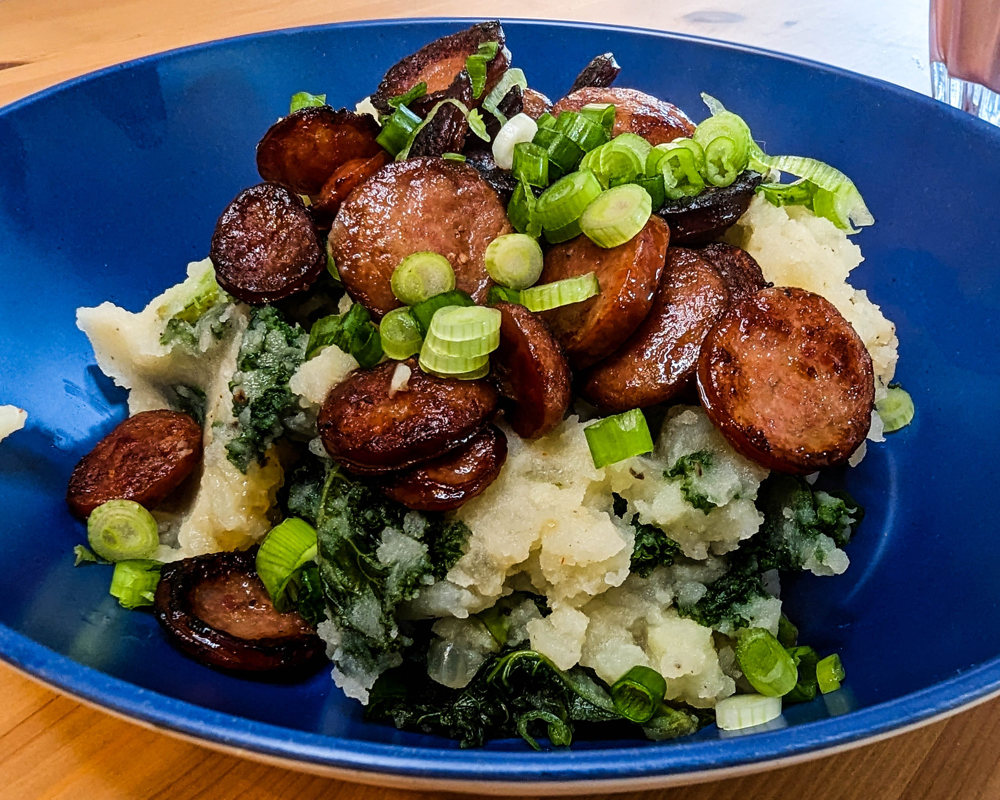

 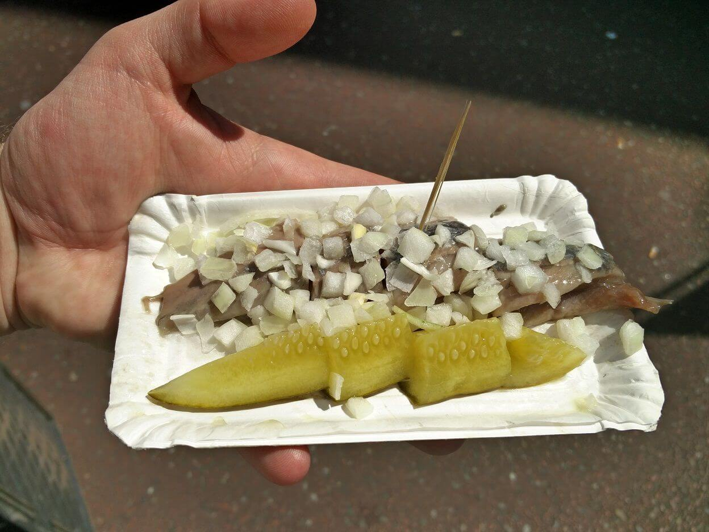
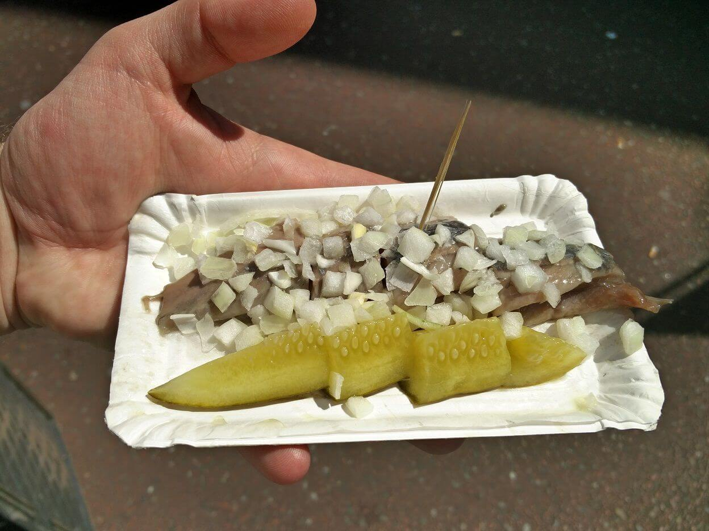


 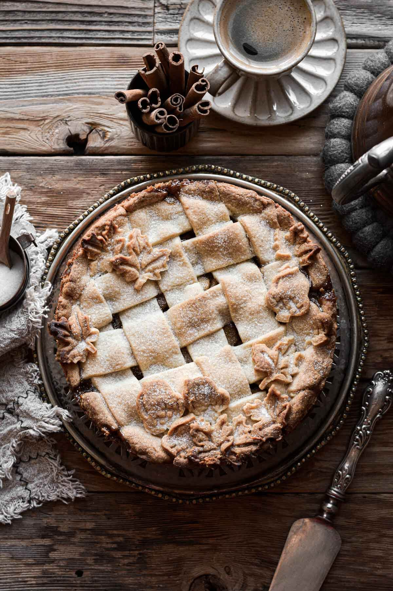
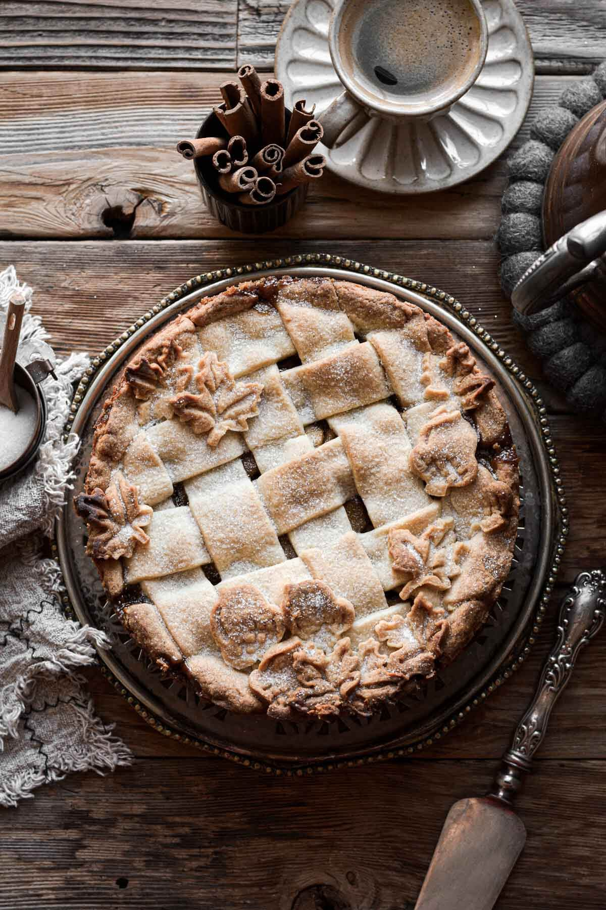